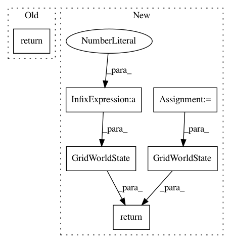

045c8484b4055197c5e789801e11f74340e9ab74,simple_rl/tasks/navigation/NavigationMDP.py,NavigationMDP,get_states,#NavigationMDP#,244
Before Change
Returns all reachable states
return self.value_iter.get_states()
def get_trans_dict(self):
Returns transition dynamics matrix
After Change
Returns all states
return [GridWorldState(x, y) for x in range(1, self.width + 1) for y in
range(1, self.height + 1)]
def get_states(self):
Returns all states
In pattern: SUPERPATTERN
Frequency: 3
Non-data size: 6
Instances
Project Name: david-abel/simple_rl
Commit Name: 045c8484b4055197c5e789801e11f74340e9ab74
Time: 2018-09-04
Author: yagneshrevar@gmail.com
File Name: simple_rl/tasks/navigation/NavigationMDP.py
Class Name: NavigationMDP
Method Name: get_states
Project Name: david-abel/simple_rl
Commit Name: 352d3da2658b39af8ffe5a8dc1a0612f30e67b27
Time: 2018-04-25
Author: yagneshrevar@gmail.com
File Name: simple_rl/tasks/navigation/NavigationMDP.py
Class Name: NavigationMDP
Method Name: get_random_init_state
Project Name: david-abel/simple_rl
Commit Name: 0d64f0eb8da06f1a380e938ec58593f4ab3455b9
Time: 2018-04-23
Author: yagneshrevar@gmail.com
File Name: simple_rl/tasks/navigation/NavigationMDP.py
Class Name: NavigationMDP
Method Name: get_random_init_state